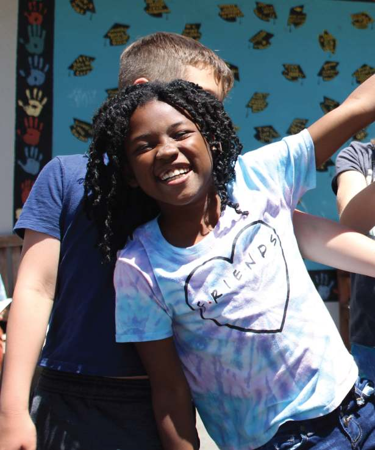

Welcome to Thornhill
We help students grow through strong academics, joyful learning, and a caring school culture.
Families often come here forReporting an absenceThe school calendarThe Tuesday newsletterWhich app to useThe PFC board
Choose Thornhill
Strong academics in a joyful setting.
Thornhill Elementary offers a TK to 5 program that blends academic challenge with creative learning and a supportive school climate. We focus on reading, writing, and math along with daily routines that build confidence and connection. Our staff partners with families to support the whole child. As part of OUSD, we help students thrive in a safe and joyful school environment.

Stay Connected

Upcoming
- Oct14Minimum Day (every Wednesday)Wed, All day
- Oct15School Picture DayThu, All day
- Oct17ThornChill Fall FestivalSat, 11:00 AM to 2:00 PM
Where things live
- ParentSquareOfficial messages from the district, Principal Scott, and teachers. Attendance alerts and permission slips.
- KonstellaFamily directory, your child's classroom page, volunteer sign-ups, RSVPs, and the newsletter archive.
- Aeries Parent PortalGrades and the standards-based report card.
- The Tuesday newsletterOne email a week with everything coming up.